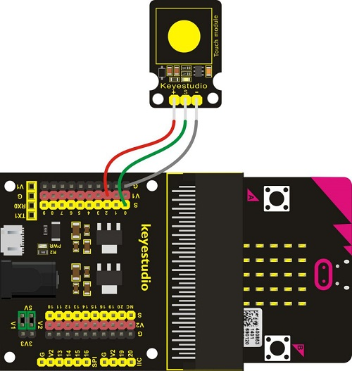

Piny II: Dotykový senzor
Potřebné součásti
- samozřejmě micro:bit
- rozšiřující deska (Keyestudio Micro:bit Sensor Shield V2)
- kapacitní dotykový senzor (Keyestudio Capacitive Touch Sensor)
- propojovací vodiče (drátky) × 3
Fungování dotykového senzoru
Senzor reaguje na dotek prstu na žluté plošce, a to i bez mačkání. Prst mírně změní elektrické vlastnosti plošky (její kapacitu) a modul to pozná. Micro:bit z něj čte jen dvě hodnoty: 1, když se plošky dotýkáte, a 0, když ne. Stačí tedy jeden pin a příkaz digital read pin P0.
pin P0 = 0
malé srdce
Zapojení senzoru k micro:bitu
Modul má tři vývody: V (napájení), S (signál) a G (zem). Drátky zapojte takto:
| Vývod senzoru | Barva vodiče (drátku) | Pin na desce |
|---|---|---|
| V (napájení) | červený | V |
| S (signál) | zelený | S |
| G (zem) | šedý | G |

Úlohy
Úloha 1: SrdceKdyž se dotknete senzoru, micro:bit ukáže velké srdce, jinak malé srdce. Použijte ideáně blok pokud … jinak a čtení pinu P0.
Úloha 2: Počítadlo dotykůKaždý dotek zvýší proměnné počet (nebo se může jmenovat jinak) hodnotu o 1 a tolik diod se rozsvítí na displeji.
počet = 0
čekám
Úloha 3: MorseovkaKrátký dotek (třeba do půl sekundy) znamená tečku, dlouhý čárku. Micro:bit ukáže na displeji · nebo –. Pak zkuste poskládat písmeno, třeba S (···) a O (−−−), buď si zkusit zakódovat nějakou zprávu na papír a ukázat ji spolužákovi, aniž by viděl nějaká slova nebo se to můžete pokusit i naprogramovat.